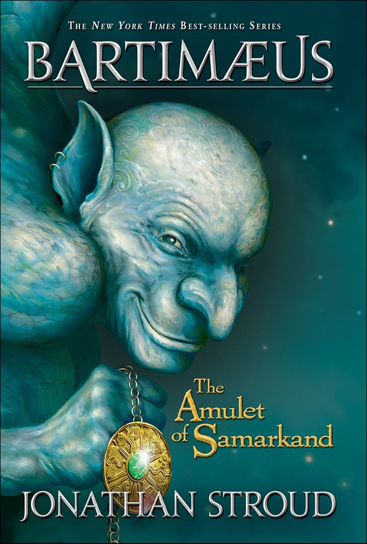
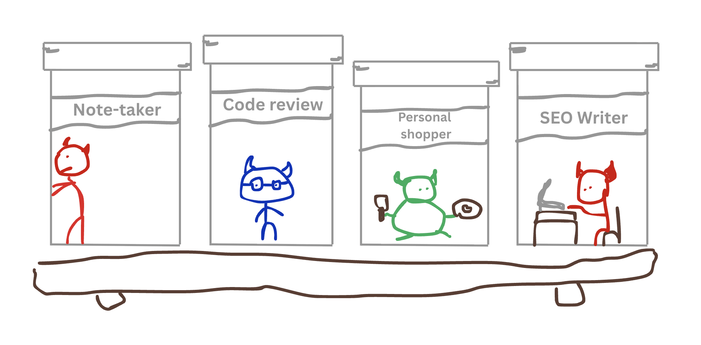
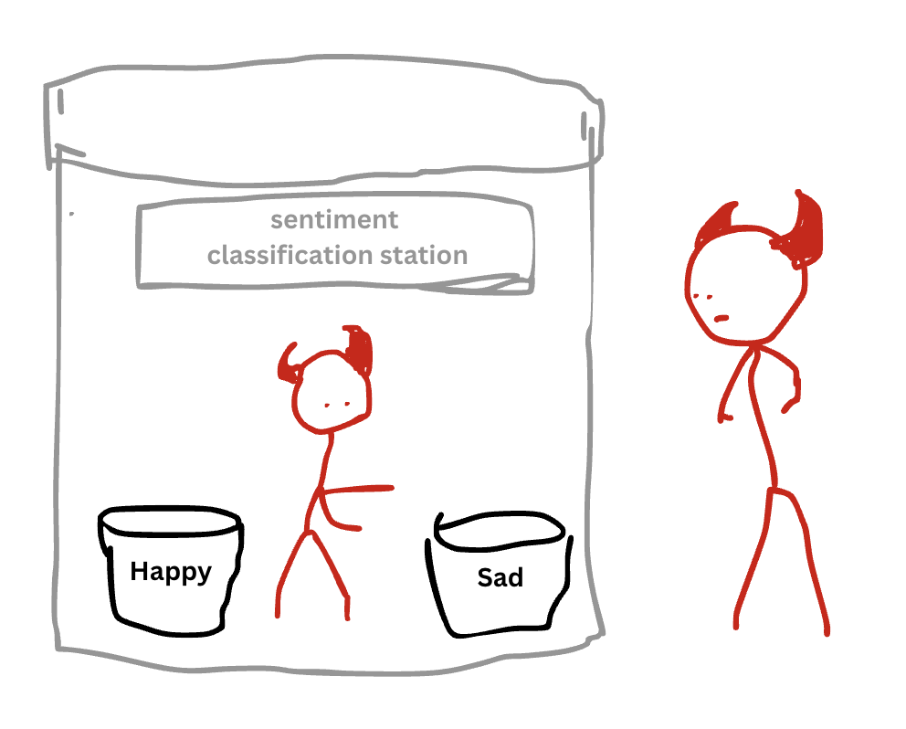
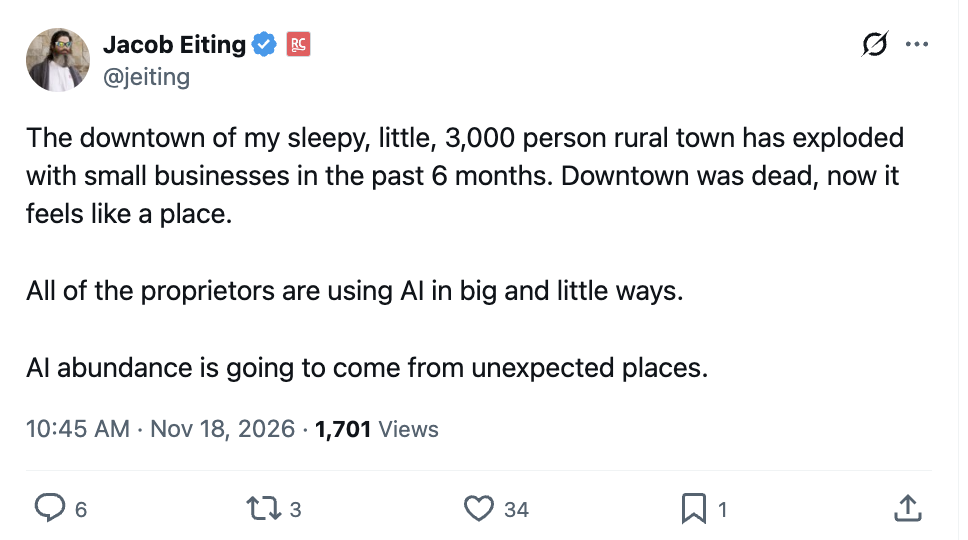
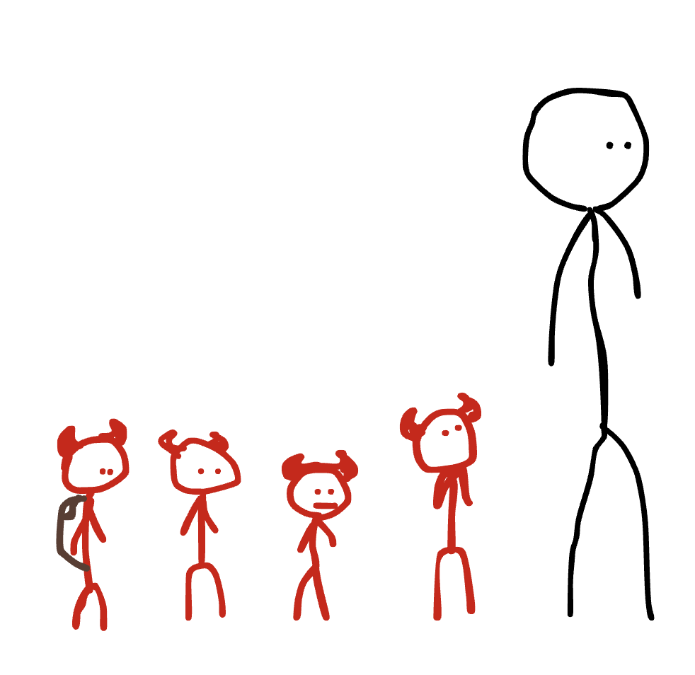

I’ve been building a ai agents for other people recently. The more I do it, the more the metaphor of AI as an act of summoning starts to resonate.
You get the sense that the thing you’re creating is more capable than you. If only it had hands, and wasn’t confined to the pentagram on the floor. Young adult fiction prepared me well for this moment. You have your right-hand demon, that does whatever individual task you throw at it.

But the real leverage comes from taking a smaller one and putting in a box. Train it to solve a problem and coach it until it’s good enough. Give it just enough access to do exactly what it needs, and then keep it running forever. The zeitgeist around openclaw came and went, but it turns out that AI + a cron job works really really well.
Another task? Another imp in a jar. Throw in a slightly bigger imp to orchestrate and now you’ve got a whole little org chart.

This feels reminiscent of training machine learning models back when curve fitting (derogatory) the definition of AI. Fitting a regression or tree based model always looked a bit like training a minion. But back then they were limited to predictive tasks, with zero capacity for ambiguity. Sort fruits into buckets, predict likelihood of conversion, that sort of thing.
Like a precise, autistic employee.

Naturally the impact was limited. Now that anyone can conjure general intelligence, you’re seeing usage explode along the margins.
You’ve heard a lot about AI impacting tech hiring - but the real bloodbath is in the white collar gig economy.
In a past life I had a bootstrapped business A LOT of contractors to do discrete tasks on Upwork. In the AI labor transformation wave, these were the first to go. If I could handle a small discrete task to a human at 5 hours a week, AI could usually do it better.
Yes it’s cheaper. But the real value is that the AI was faster and easier to manage. Give feedback to a set of contractors and pray that they’ll do it correctly after a enough coaching. Put your feedback in markdown and the agent doesn’t repeat the mistake again.
Anyone that’s ran a business knows that the most critical skill is hiring. Finding and managing the right people is hard. Now? Just summon more imps.
On the flip-side of this is a form of abundance. For a global software business this has ushered panic. Now that any feature can be cloned in a day - what defensibility is left?
For smaller businesses, particularly ones with audience-based or geographic moats, this has opened a world of possibilities.

We found ourselves doing more fun things, taking more shots. AI makes new endeavors far less costly, not just to build but to manage. So much of a managerial job used to be deciding what not to do. Now the upper bound is your own creativity and ability to manage.
How far will this go? TBD, but we’re starting to see the outline.
Developers? We’re there. AI accountants? Soon. AI CEOs? Not for a long time. AI salespeople? Probably never.
An imp in a jar works because the task holds still. Sort the fruit, reconcile the invoices, triage the support tickets. But business is innately adversarial, and adversarial tasks don’t hold still. If everyone has access to the same imps, summoning one is no longer enough to win.
It’s why AI can one-shot a complex software application and still can’t run a marketing team. All the startups that promised fully automated ads stalled, pivoted, or shut down (one quietly went back to humans), and I expect them to keep failing. Because the moment a given style of marketing becomes widely saturated, it no longer works at grabbing anyone’s attention.
Patrick Mackenzie describes this really well in an interview with the founder of Pangram.
…“you could compare, for a given author, politician, et cetera: does this person say something different than you would predict a person in their position as saying?
And if someone has no alpha above that LLM baseline, then you can basically discount them as having any informational value. And there are many opinion writers who are very well employed, et cetera, who have no value above the weights.”
The same test applies to any job. If your work has no value above the weights, off it goes to the imps. The jobs that survive are the ones where landing outside the weights is the whole point, or where the feedback loop is too long to verifiably train an AI to succeed.
Bigger demons will be summoned, but as long as the free market remains a free market, I think there’s room for humans. It’s a bit sad to boil human value to “a randomization layer on top of the ai” but here we are.

There is one flavor of contractors where we’ve been hiring more and more than ever: marketers. Content creators, paid and organic. Content to feed the beast. I’ll take paperclip maximizer over the world where each of us becomes a marketer.
I’ll take the paperclip maximizer over a world where every one of us ends up in marketing or sales.
Without further ado, my contribution to the AI risk literature:
And lo, the loom did weave itself, and the sons of Adam stood idle in the field, and said unto one another: “Have you heard about our limited-time offer?”
Every revolution moved our hands to the next kind of work: from the field to the mill, from the mill to the office. By 2033 the machines had taken the last of it, including science, medicine, art, and the factories themselves. Abundance arrived as promised, but abundance has no purchasing department. When anything can be made, the only thing still scarce is being chosen, and only a person could reach a person, so we all became salespeople. Your grandmother has a referral code, and so do the monks on Athos. You pitch your neighbor a mattress the machines designed, and he pitches you an app the machines also designed. Then the buyers became agents too, and the best rhetoricians since Cicero now spend their lives whispering about oat milk to a model that will never drink it.
There was no apocalypse, and the machines never turned on us. They just kept everything in stock while eight billion of us knocked on each other’s doors. Somewhere a man is dying, and his last words are sponsored.